About
Costa Rica is a country located in Central America that is ranked as one of the most visited international destinations. One of Costa Rica’s main sources of income is tourism. Costa Rica is a democratic and peaceful country and it has not had an army since the year 1948.
Plants
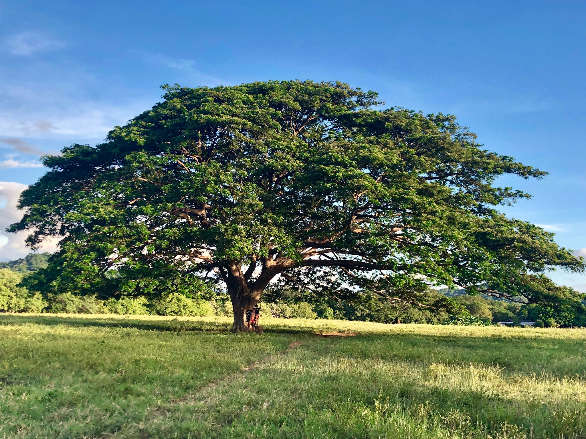
Guanacaste Tree
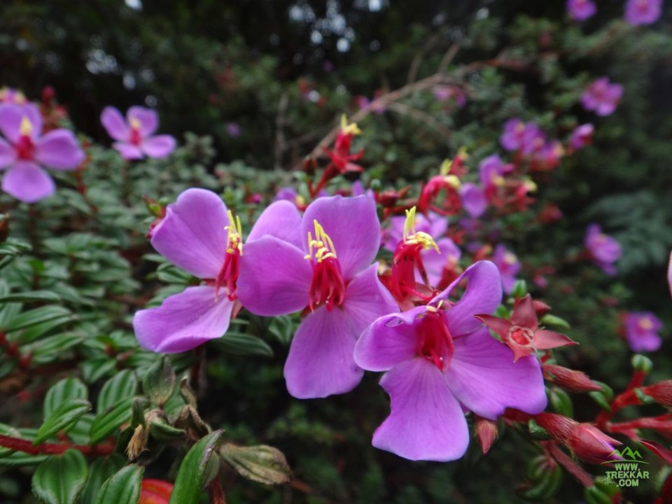
Purple Orchid
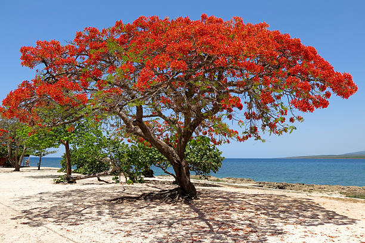
Malinche Tree
Animals
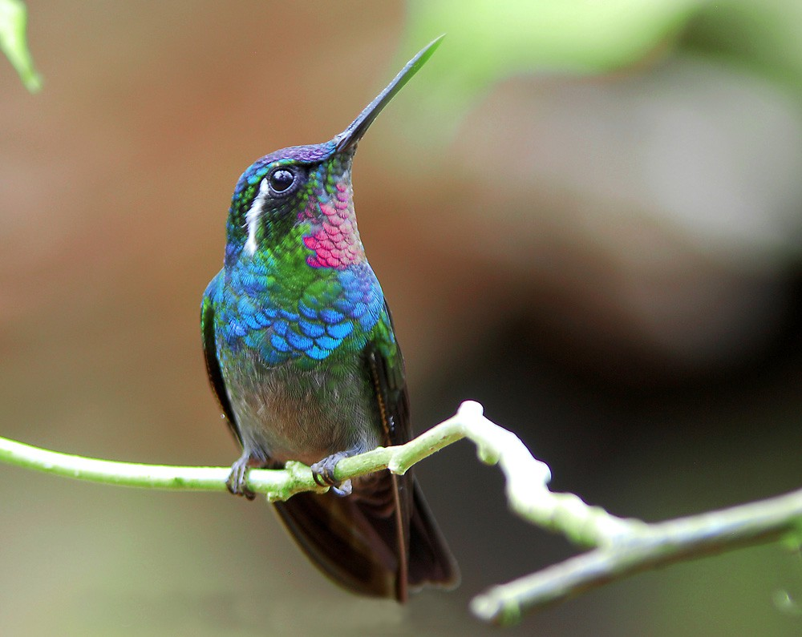
Hummingbird
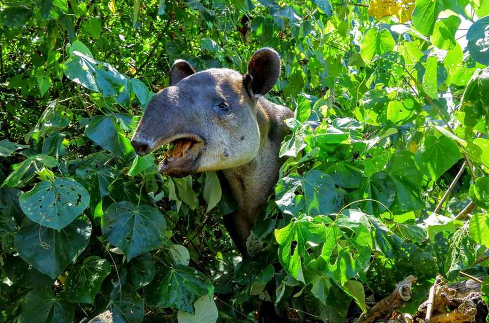
Tapir
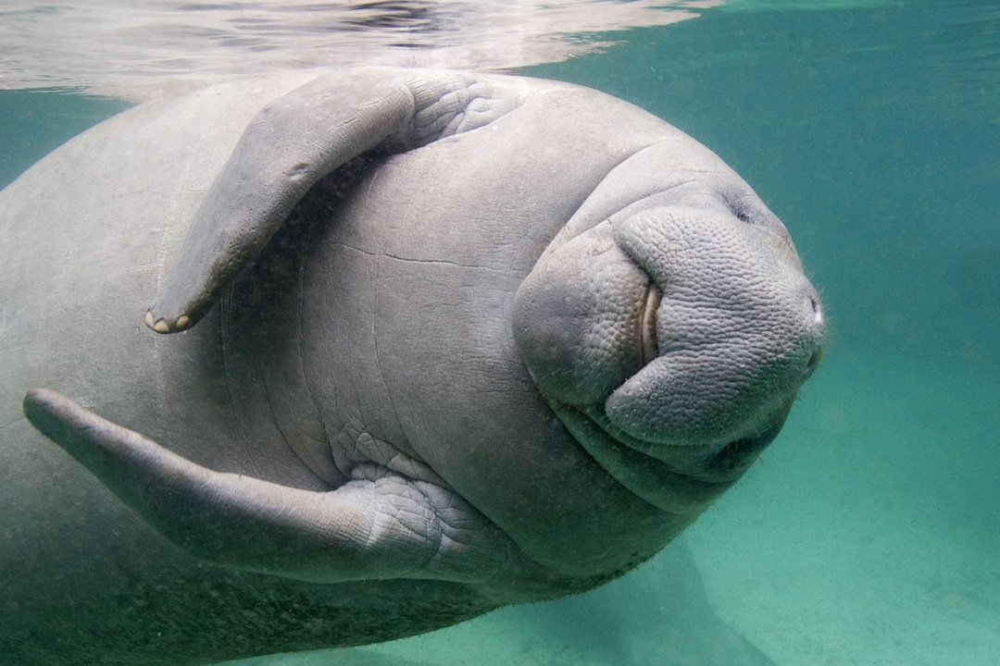
Manatee
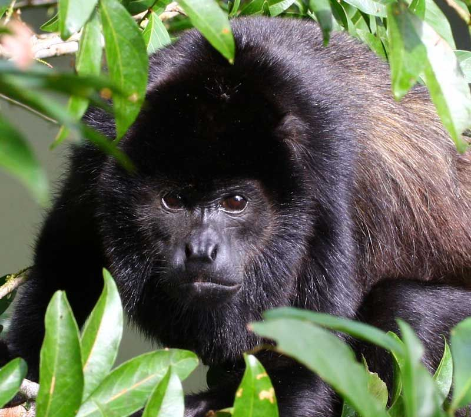
Congo monkey
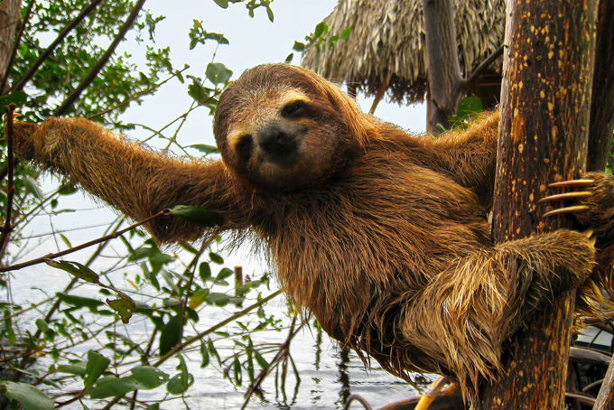
Sloth
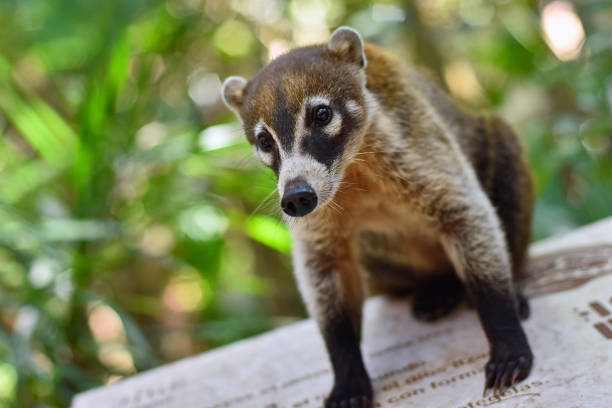
Coati
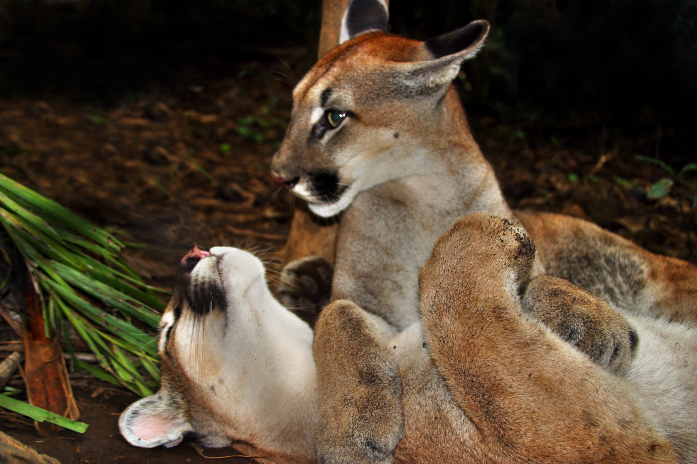
Cougar
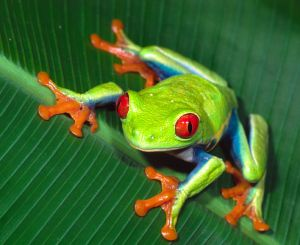
Red eyed frog
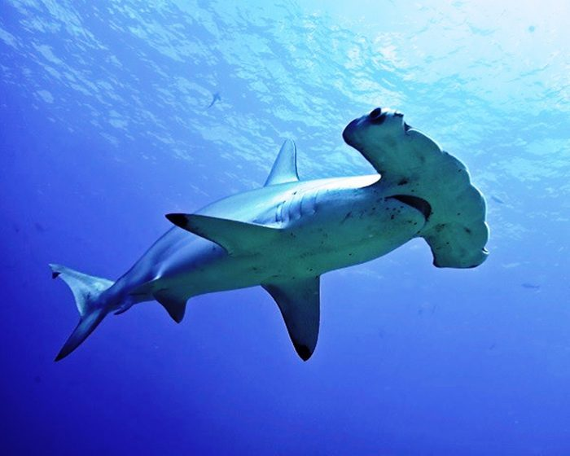
Hammerhead shark
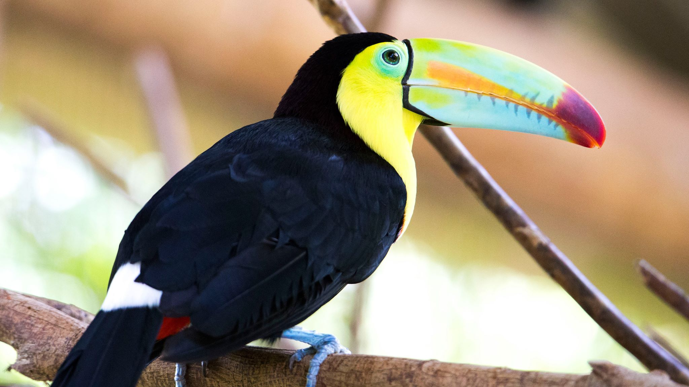
toucan
 White tailed deer
White tailed deer
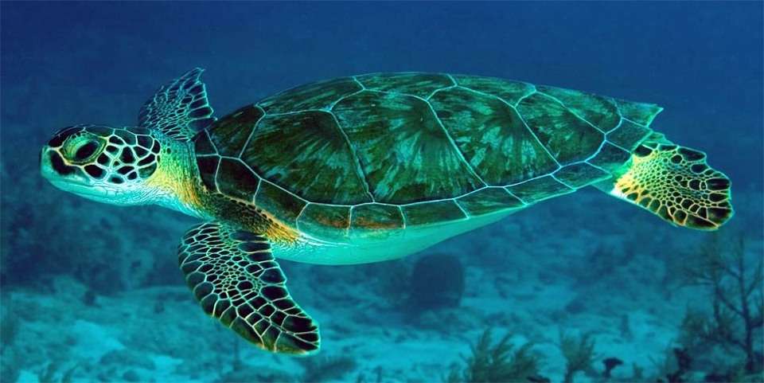
Green sea turtle
Culture
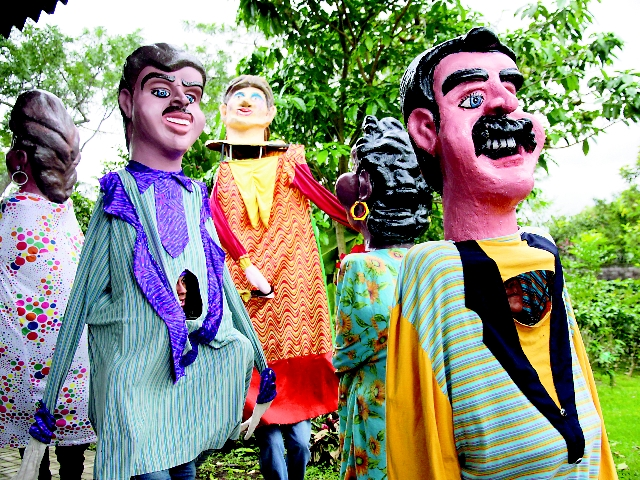
Masquerade
Mascarade is a very traditional and popular festivity
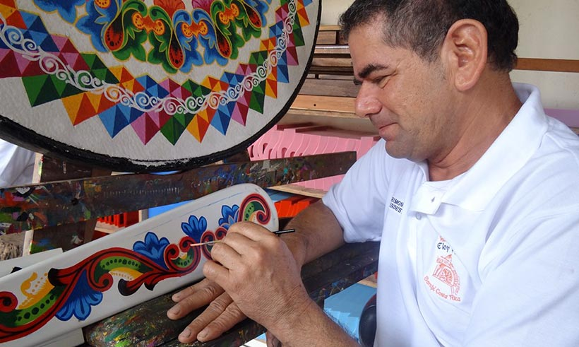
Handmade painting
Unique and coloful painted designs on a cart
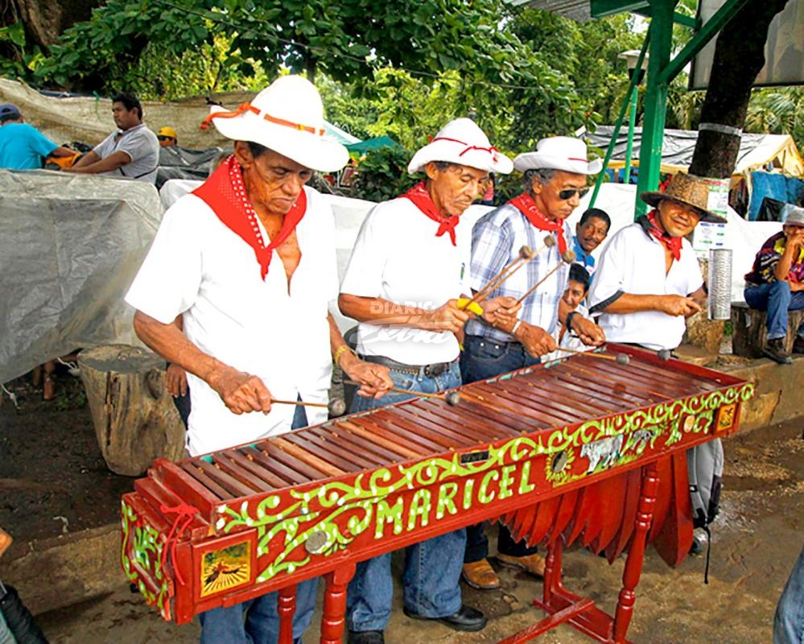
Music
An important instrument for this type of musci es the "marimba"
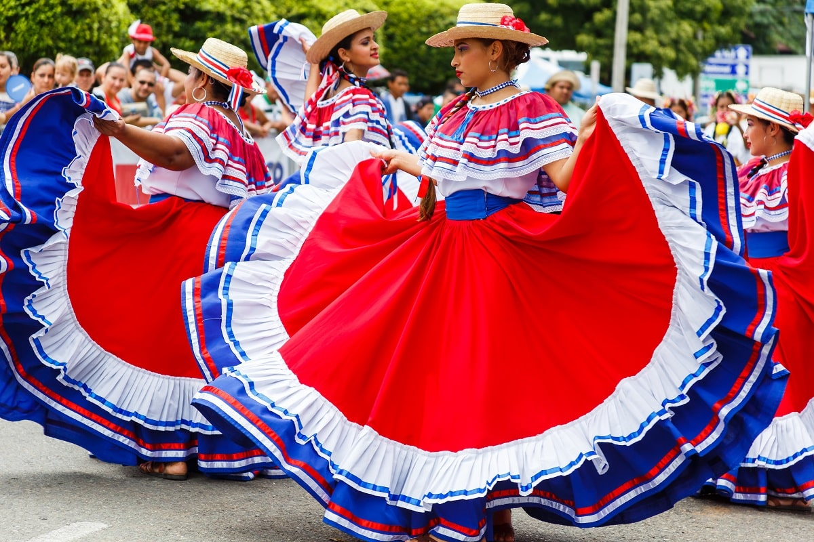
Folk dance
Guanacaste is the heardland of Costa Rican folkloric music and dancing
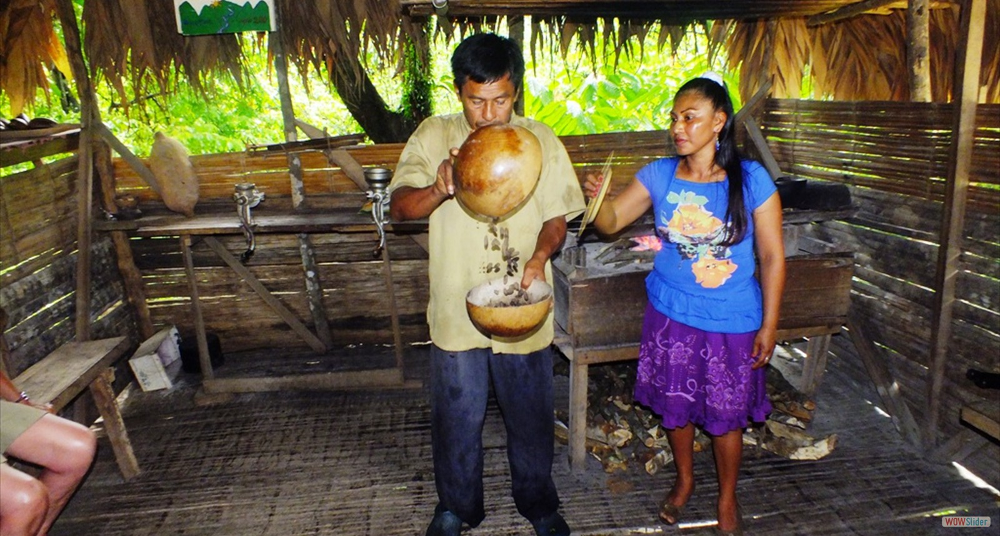
Bríbrí reserve
The Bribri are an indigenous people of Costa Rica. They live in the Talamanca canton